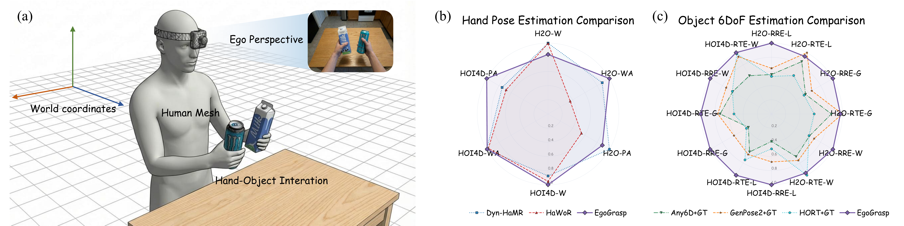
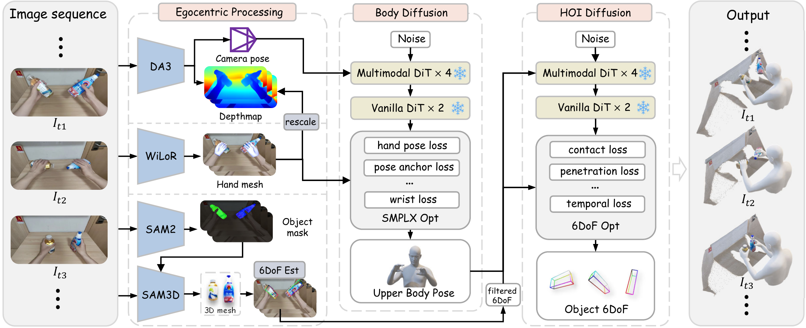

Abstract
We propose EgoGrasp, the first method to reconstruct world-space hand-object interactions (W-HOI) from dynamic egoview videos, supporting open-vocabulary objects. Accurate W-HOI reconstruction is critical for embodied intelligence yet remains challenging. Existing HOI methods are largely restricted to local camera coordinates or single frames, failing to capture global temporal dynamics. While some recent approaches attempt world-space hand estimation, they overlook object poses and HOI constraints. Moreover, previous HOI estimation methods either fail to handle open-set categories due to their reliance on object templates or employ differentiable rendering that requires per-instance optimization, resulting in prohibitive computational costs. Finally, frequent occlusions in egocentric videos severely degrade performance.
To overcome these challenges, we propose a multi-stage framework: (i) a robust pre-processing pipeline leveraging vision foundation models for initial 3D scene, hand and object reconstruction; (ii) a body-guided diffusion model that incorporates explicit egocentric body priors for hand pose estimation; and (iii) an HOI-prior-informed diffusion model for hand-aware 6DoF pose infilling, ensuring physically plausible and temporally consistent W-HOI estimation. We experimentally demonstrate that EgoGrasp can achieve state-of-the-art performance in W-HOI reconstruction, handling multiple and open vocabulary objects robustly.
Method Overview

Overview of EgoGrasp. We propose a three-stage method to recover world-space hand-object interaction from egocentric monocular videos with dynamic cameras: (1) extract 3D attributes with spatial perception models; (2) reconstruct upper body pose with motion prior provided by Body Diffusion; and (3) interpolate discrete 6DoF sequences with HOI Diffusion for spatial, temporal, and contact consistency.
Demo Videos
Qualitative Results
BibTeX
@article{fu2026egograsp,
title={EgoGrasp: World-Space Hand-Object Interaction Estimation from Egocentric Videos},
author={Fu, Hongming and Wang, Wenjia and Qiao, Xiaozhen and Potamias, Rolandos Alexandros and Komura, Taku and Yang, Shuo and Liu, Zheng and Zhao, Bo},
journal={arXiv preprint arXiv:2601.01050},
year={2026}
}